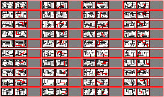
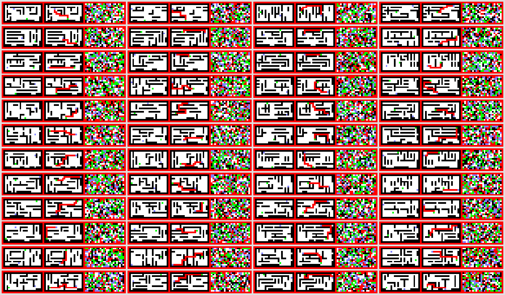

Here we showcase how generating sequence with σ-GPT and GPT looks like.
Note that the results are prerecorded for the sake of this demonstration
and no actual generation is happening here.
We use the same model, once with rejection sampling, once generating in a
random order, and once generating sequences causally.
We did not cherry picked the results (all 3 corresponds to seed 0).
Theses sequences are recorded, the steps for rejection sampling are played again with an interval of 250ms, the other two with an interval of 50ms.
σ-GPT with rejection sampling
σ-GPT
GPT
Fractal GPT
Path-Solving
Here we showcase how σ-GPT can be used to solve path-finding problems. In
particular how rejection sampling allow to finish some samples first, and
then can continue to solve the rest of the samples.
Red indicates a wrong path, white a valid completed path.
σ-GPT Rejection Sampling

Diffusion

Vertical Rate Prediction
Same for vertical rate prediction.
Here a black border indicates a completed sequence.